and Gums
Next time you look in a mirror, look at your teeth and the skin (gums) around them. Look in your children’s mouths, too. Look at both gums and teeth, because the health of one often depends on the health of the other. To be strong, teeth need healthy gums. Healthy gums need clean teeth.
What can good teeth give you?
• GOOD HEALTH
• GOOD LOOKS
• GOOD SPEECH
• GOOD EATING
• GOOD BREATH
And when you think of your teeth, think of your gums. Gums are important for holding each tooth in place.
You need strong teeth to eat different kinds of foods. Different foods are important for health. Nuts, maize, fruits, and meat are some of the best foods—but they are difficult to bite and chew if your teeth are loose and hurting!

You can usually tell if your teeth and gums are healthy or not. Look at the pictures on pages 73 and 74 and compare them with your own mouth. If you find a problem in your mouth, look for its name in Chapter 6 and look for its treatment in Chapter 7.
Most important: when you are not sure of a problem or how to treat it, talk to an experienced dental worker.
If you notice a problem early, often you can stop it from getting worse. It is even better to prevent the problem from starting. You can do this if you know how to keep your teeth and gums healthy.
Learn to take care of your own teeth and gums before you try to teach others. A good example is one of your best teaching tools. People will see that you are healthy, and they will want to know why. When you tell people ways to care for their teeth, they will believe you if they know that you do these things yourself. First take care of your own teeth and gums. Then teach your family what you have learned. They, too, will be good examples for others to see.
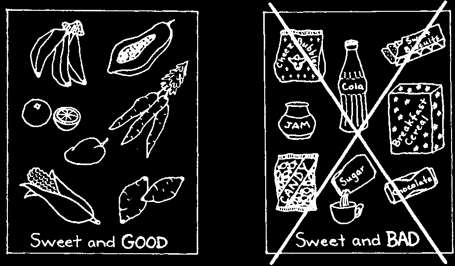
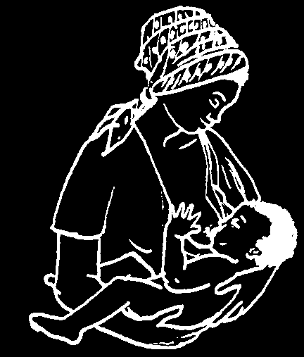
EAT ONLY GOOD HEALTHY FOODS
The best food is food that you grow or raise yourself. Mix different kinds of food together and eat several times a day. This helps your body as well as your teeth and gums to stay strong and healthy. Traditional food is usually good food.
Sweet food, especially the kind you buy from the store, can mix with germs and make cavities—holes in the teeth. Soft food sticks to the teeth easily and it, too, can make a coating of germs and food on the teeth that starts an infection in the gums—gum disease.
Soft and sweet food and drinks with a lot of sugar are bad for both teeth and gums.
Breast feed to help a child’s teeth
Do not give a baby anything to drink grow and stay strong. An older child from a bottle. Sweet tea, sugar water can drink from a cup.
or fruit juice can easily make holes in the child’s teeth.
remember:
BREAST
IS
BEST!
YES
NO
GOOD FOR TEETH
BAD FOR TEETH
Even milk has sugar that can wash over the baby’s teeth and cause cavities when it comes from a bottle.
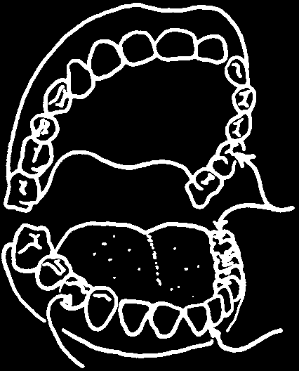


CLEAN YOUR TEETH EVERY DAY
If you do not clean properly, the food that is left on your teeth can hurt the teeth as well as the gums near them.
HIDING PLACES
Bits of food stay longer in grooves and 'hiding places’.
This is where both tooth and gum problems start.
To prevent problems you grooves must take special care to on top keep these protected places clean.
between
It is better to clean your the teeth teeth carefully once every near the gums day than to clean poorly many times a day.
Here are 3 places where problems start.
Use a soft brush to clean your teeth. Buy one from the store (be sure it says soft on the package), or make a brush yourself. To make a brush:
1. Use a small branch of young
2. Cut a piece that is bamboo, strong grass, or the skin still green and soft.
from sugar cane or betel nut.
3. Chew one end to make it
4. Sharpen the other end so stringy like a brush.
it can clean between the teeth (see pages 71-72).

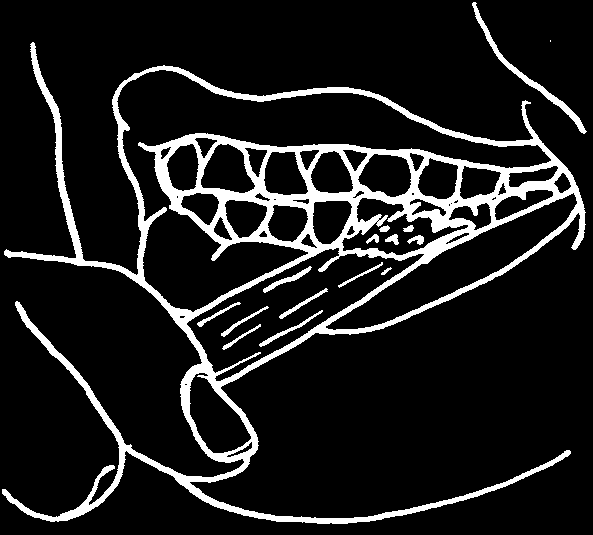
You can twist the fiber from inside a coconut husk into a kind of brush. First rub it and shake away the loose bits. Then use the end to clean your teeth.
Whatever kind of brush you use, be sure to clean your back teeth as well as your front teeth. Scrub the tops and sides where the grooves are. Then push the hairs between the teeth and scrub (page 69).
Toothpaste is not necessary.
Charcoal or even just water is enough. When your teeth are clean, rinse away the loose pieces of food.


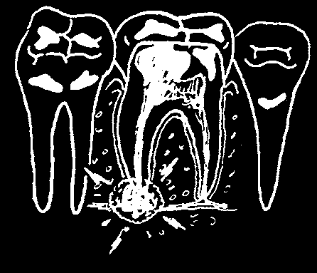
CAVITIES, TOOTHACHES AND ABSCESSES
'Cavities’ are holes in teeth. Cavities are made by the infection called tooth decay. If you have a black spot on your tooth, it might be a cavity. If that tooth hurts some of the lime, such as when you eat, drink, or breathe cold air, it probably has a cavity in it.
You will get cavities in your teeth if you eat sweet food and then do not clean your teeth. If you see a cavity starting in your mouth or feel a tooth hurting you, get help right away. If you do not fill a cavity, it grows bigger and deeper. A dental worker knows how to fill the cavity so you can keep that tooth. Do this before the pain gets worse.
Each tooth has roots
When decay
When infection that hold it in the touches the nerve reaches the jaw bone. Inside inside the tooth inside of a root, each root is a nerve.
aches, even when it is called a
(p. 39 to 40 and 45)
you try to sleep.
tooth abscess.
A tooth with an abscess needs treatment at once, before the infection can go into the bone (page 93). In most cases the tooth must be taken out. If it is not possible to do this right away, you can stop the problem from getting any worse if you follow these steps:
1. Wash the inside of your mouth with warm water. This removes any bits of food caught inside the cavity.
2. Take aspirin or acetominophen for pain.
See page 95 for amount.
3. Reduce the swelling:
• hold warm water inside your mouth near the bad tooth.
• Wet a cloth with hot water and hold it against your face. Do not use water hot enough to burn
A tooth abscess can cause yourself!
swelling like this.

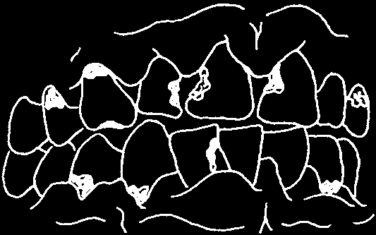

SORE BLEEDING GUMS
Healthy gums fit tightly around the teeth. Gums are infected if they are loose, sore, and red, and if they bleed when the teeth are cleaned. Infection in the gums is called gum disease.
Gum disease, like tooth decay, happens when acid touches the teeth and gums. This acid is made when sweet and soft foods mix with germs (see page 50).
HEALTHY TEETH AND GUMS
CAVITIES AND GUM DISEASE
Infection from gum disease can spread into the root fibers and bone (see page 42). But you can stop gum disease and prevent it from coming back. There are two things to do: clean your teeth better and strengthen your gums.
1. Even if your gums are sore and they bleed, you must still clean the teeth beside them. If more food collects on the teeth, the gum infection will get even worse. Get a soft brush (see p. 4) and use it gently. This way you will not hurt the gums when you clean.
2. To make your gums stronger and more able to fight the infection:
• Eat more fresh fruits and green leafy vegetables, and fewer soft sticky foods from the store.
• Rinse your mouth with warm salt water. Do this every day, even after your gums feel better.
(1) Mix some salt with a cup of warm water. (2) Take a mouthful and rinse. (3) Spit it out. Repeat until all of the salt water is finished.
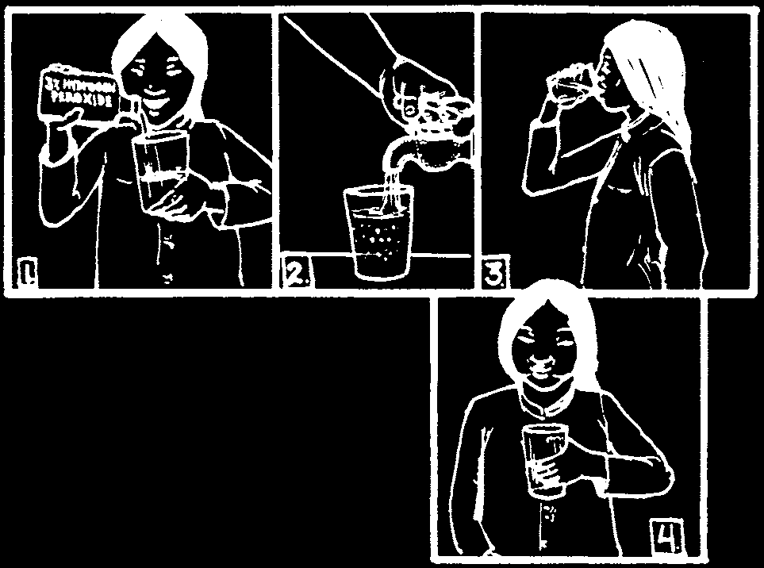
MORE SERIOUS GUM DISEASE
Painful gums that bleed at the slightest touch need special treatment. If you have this problem, ask for help. A dental worker can explain what is happening and what needs to be done. A dental worker can also scrape the teeth and remove the tartar that is poking the gums, making them sore.
At home, you can do some things to help.
• Clean your teeth near the gums with a soft brush. Gently push the brush between the tooth and the gum. It may bleed at first, but as the gums toughen, the bleeding will stop.
• Make your food soft, so it is easier to chew. Pounded yam and soup are good examples.
• Eat plenty of fresh fruits and vegetables. If it is difficult for you to bite into fruit, squeeze it and drink the juice.
• Start rinsing your mouth with a mixture of hydrogen peroxide and water. You can get hydrogen peroxide from your clinic or your pharmacy (chemist).
The strength of hydrogen peroxide is important. Ask for a 3% solution, and mix it evenly with water—that is, ½ cup of hydrogen peroxide with ½ cup of water.
WARNING: Read the label to be sure the solution is 3%. A mixture with more than 3% hydrogen peroxide can burn the mouth.
Take some into your mouth and hold it there for about 2 minutes. Then spit it out and repeat. Do this every hour you are awake.
Use hydrogen peroxide for only 3 days. Then change and start rinsing with salt water (page 7).
If you take care, you can keep your teeth for a lifetime.
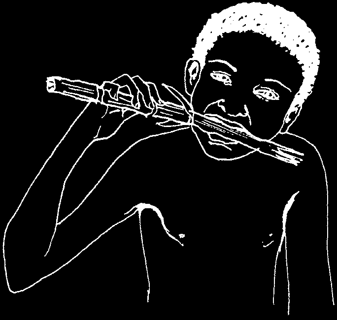
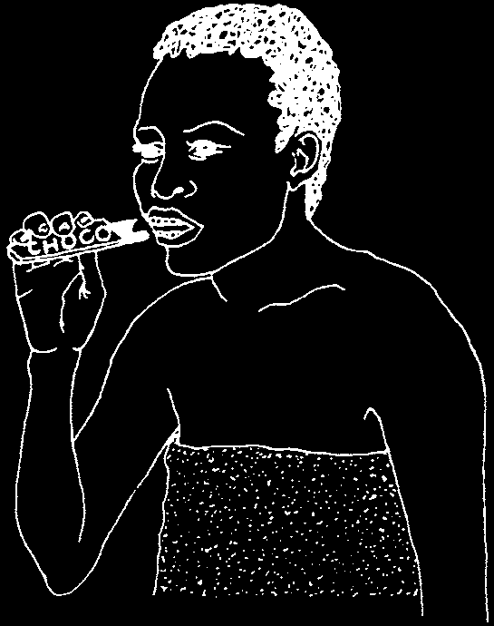
CHAPTER 2
Teaching Family and
Friends in Your Community
Old people can remember when there were fewer problems with teeth and gums. Children’s teeth were stronger and adults kept their teeth longer.
Times are changing. Today there are more tooth and gum problems than ever before. In many countries, tooth decay and gum disease are two of the fastest growing health problems.
This unhealthy situation is getting worse, for two reasons: changes in the kind of food people now are eating, and not enough cleaning after they eat.
BEFORE, the food people ate
NOW, more people are buying was their own, grown and softer and sweeter food from prepared by themselves.
the store. This kind of food sticks to the teeth more easily so it has more time to attack the teeth and gums.
Even sugar cane was not as bad
Everyone must be more careful as the sticky candy children eat to clean away soft, sweet today. The sugar was bad for the food. But many people do not teeth, but the fiber in the cane know how. Some, especially helped rub them clean.
children, do not even try.

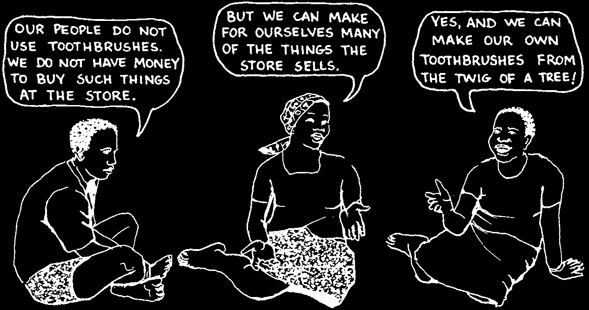
Many people do not understand that tooth and gum problems are caused by certain kinds of food, and poor cleaning of the teeth. In fact, some have a completely different belief.
Do not attack a belief because it is traditional. Many traditions are more healthy than 'modern’ things. Often, instead of telling people that their belief is wrong, you can remind them of a different tradition that is healthy.
Help your family and friends to recognize their healthy traditions. Then help them find new ways to use these same traditions for better health.
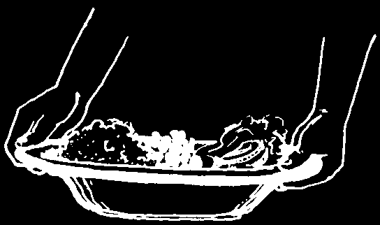


BE A GOOD EXAMPLE
Other people like to watch what you do before they try something different.
First show members of your family and then they will be an example to others in your community. For example:
1. Instead of buying all your foods from the store, buy fresh fruits and vegetables from the market. It is even better to grow food in your own garden.
Learn to use several different kinds of foods in each meal. Mixing foods is a healthy idea. Invite friends to share your meals and see the number of different foods you have at each meal.
2. Do not buy fizzy drinks like Coca-Cola or Fanta.
They have a lot of added sugar which quickly makes children’s teeth rotten.
Also, do not sweeten your child’s milk or tea.
When she is young she can learn to enjoy drinks that are not sweet.
Clean, cool water, tea with little sugar, milk, or water from a young coconut are best to drink.
Fresh fruits are delicious when you are thirsty.
Most important: do not give your child feeding bottle, especially one with a sweet drink inside. (See page 3.)
3. Keep your children’s teeth clean.
Your friends will notice clean teeth or teeth that are dirty or have cavities. remember, clean teeth are healthy teeth.
An older child can clean his own teeth if you show him how.
A younger child cannot. He needs help. Each day someone older should clean his teeth for him
(page 18).


When you teach, remember that as others learn, they too become teachers. Each person can teach another.
Encourage people to pass along what you have taught. Mothers can teach family and friends. Students can talk at home with brothers, sisters, and older family members.
FROM THE HEALTH CLINIC…
… TO THE HOME
FROM THE SCHOOL…
… TO THE HOME
If all learners become teachers, a simple message can begin in the health clinic or school and reach many more people at home.

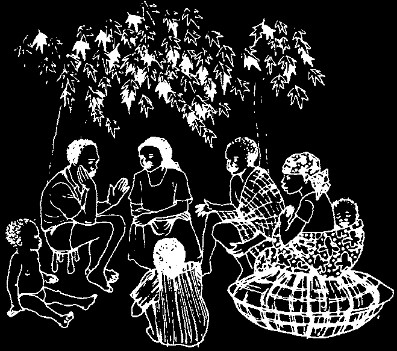

FINDING THE BEST WAY TO TEACH
Deciding what to teach is important, but just as important is how to teach.
Learning cannot take place when you use words that people do not understand.
They will learn something only when they see how it is related to their lives.
remember this when you teach about eating good food and keeping teeth clean. Design your own health messages, but be ready to change them if people are not understanding or accepting what you say.
Here are five suggestions for teaching well.
1. Learn First From the People
Get involved in your community’s activities. Learn about people’s problems, and then offer to help solve them. People will listen to you when they know that you care about them and want to help.
Sit and talk with people. Learn about their customs, traditions and beliefs. Respect them.
Learn about their health habits.
Improving health may require changing some habits and strengthening others.
Learn also about tooth decay and gum disease in your community.
Make people smile—then look into their mouths.
Find out how many children and adults are having problems with their teeth and gums. Do a survey such as the one on p. 214.


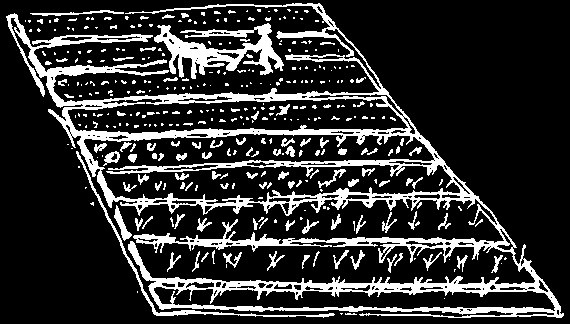

2. Build New Ideas Onto Old Ones
People find their own ways to stay healthy. Many traditions are good, helpful, and worth keeping. But some are not.
When you teach, start with what people already understand and are doing themselves. Then add new ideas.
This method of teaching is called 'association of ideas’. It helps people to understand new ideas because they can compare them with what they already are doing.
In this way people can more easily accept, remember, and do what you suggest.
A HEALTHY TRADITION
builds
NEW IDEAS AND WAYS
Sweeping the compound in the
Brushing the teeth and gums makes it a clean and same keeps them clean and healthy.
healthy place to live.
way
A small child cannot find in the
A small child cannot see the his own lice. Mother same food on his teeth. He needs knows she must help him.
way help with that also.
Eating different kinds of food
Different vegetables in the helps people to grow. Eating when planted together— same them several times a day makes like maize and yams— way your teeth and gums, as well as help each other to grow.
your whole body, grow stronger.
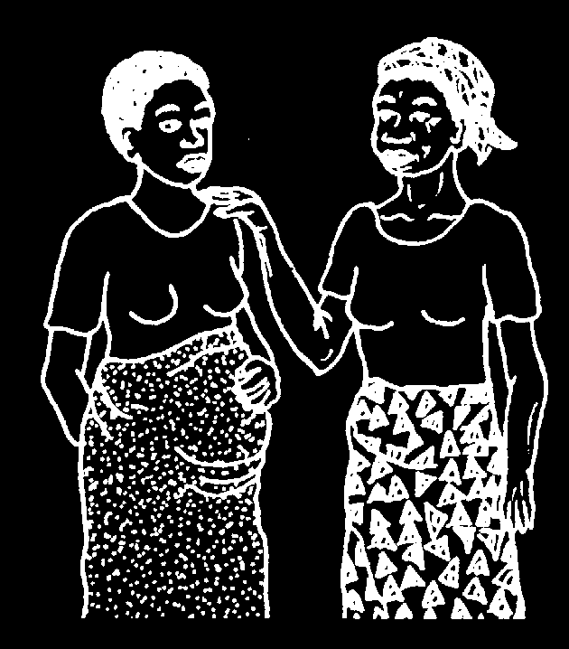
STORY TELLING—AN EXAMPLE
People everywhere have a tradition of teaching with stories. Many of the things we believe, we learned through stories we heard from parents, friends, and teachers. This is good, except when a story teaches something that isn’t true! When a woman gets pregnant, for example, she hears many stories, and she wants to learn whatever she can from these stories.
Unfortunately, some traditional beliefs about pregnancy are partly wrong. An example is the belief that one must always have dental problems during pregnancy.
Here is a story you can tell to help people see that they are partly right about pregnancy and dental problems, but that there is more to understand.
A Story: Bertine’s teeth
Bertine was the dental worker in her village. She was a young woman, but the villagers respected her because she was such a careful worker, and because she knew how to fill cavities and pull teeth without hurting people.
She also spent a lot of time teaching people how to avoid dental problems.
“Clean your teeth every day!” she often said, at her clinic, at the schools, at village meetings. “Eat a mixture of foods, especially a lot of fruits and vegetables!
Avoid candy and sweet, sticky foods!”
When Bertine was 23 years old, she got married and became pregnant. She also began to have some tooth problems of her own. She saw that her gums were bleeding when she cleaned her teeth, and she had small cavities in two of her teeth. As the dental worker, she was embarrassed to have tooth problems, but an older woman told her, “It’s natural to lose teeth when you have babies,
Bertine. As we say, 'For each child, a tooth’.”
One day Lucie, a dental worker from a nearby village, came to see her friend
Bertine. Lucie had a young baby, and Bertine asked her a lot of questions about babies and about pregnancy. Then Bertine said, “Of course, l’m having lots of problems with my teeth.” “Why do you say 'of course’?” asked
Lucie. “Well,” Bertine replied, “For each child, a tooth.”
“But that’s not true!” Lucie cried. “You think you are having tooth and gum problems because you are pregnant, but I bet you are having these problems for all the usual reasons.”
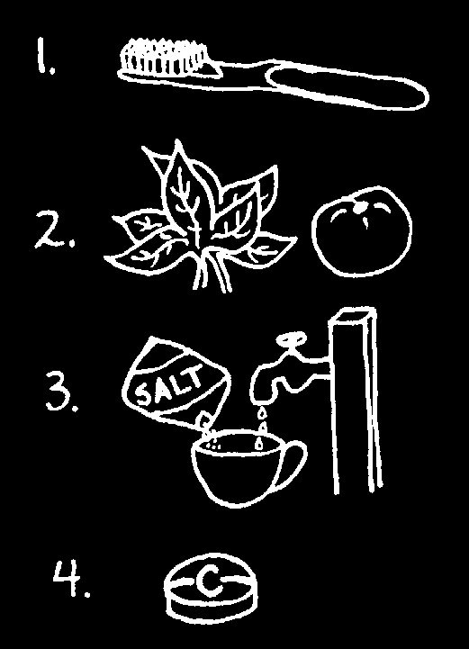
“The usual reasons?” asked Bertine.
“Yes,” said Lucie. “How often do you eat now that you are pregnant?”
“Well, a lot more than I used to—I have two persons to feed!” “And do you still eat sweet foods sometimes?” Lucie asked. “I guess I do,” said Bertine,
“and more sweets than before, because I eat more often.”
“How about teeth cleaning?” asked Lucie. “Do you clean as often as you did before you were pregnant?” “No,” Bertine admitted, “I heard I was going to have tooth problems anyway, and I have been so tired lately.... Oh! Do you suppose that these are the only reasons I am having these problems? How do you know so much about this, Lucie?”
“Because I had the same problems, Bertine. I learned the truth the hard way. I had an infected tooth, and the infection passed to my kidneys. At the health clinic, they told me it is not necessary to have tooth problems during pregnancy—and it is even dangerous. I am lucky I did not lose my baby!
That can happen, you know, when a tooth problem is not treated. We must fill your cavities right now.”
“You mean I can be treated now, before I have my baby?”
“Yes, and you should!” said Lucie. “And you can take better care of your teeth.
It is true that because of the pregnancy, your gums are weaker, and they can get infected. But this means you should take even more care than usual to: (1) clean regularly and (2) eat the right foods. You need to have strength when you are pregnant. An infection in your mouth does not help that. Because your gums are weak, it is also good to (3) rinse your mouth every day with warm salt water (see page
7), and if you cannot get fresh fruits and vegetables, then (4) take a tablet of Vitamin
C every day.”
Lucie then offered to clean Bertine’s teeth and to fill her cavities. When she touched Bertine’s gums, they bled, and Lucie said, “They will bleed at first, but after you clean them regularly for a while, they will be stronger. Bleeding gums are dangerous to a pregnant woman. The bleeding can increase anemia, which is a serious problem.”
“If a pregnant woman’s tooth has an abscess, is it safe to pull it before she has the baby?” asked Bertine. “Yes,” said Lucie, “you just must be gentle.
A woman gets tired sitting in a dental chair for a long time, and sometimes you must give some extra anesthetic so she does not feel any pain.”
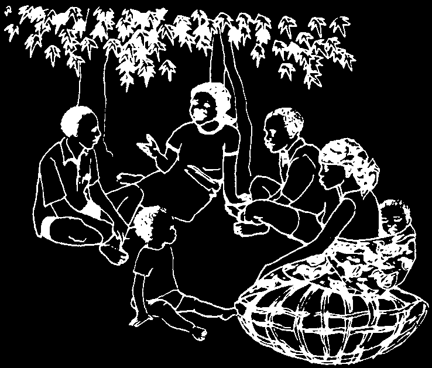